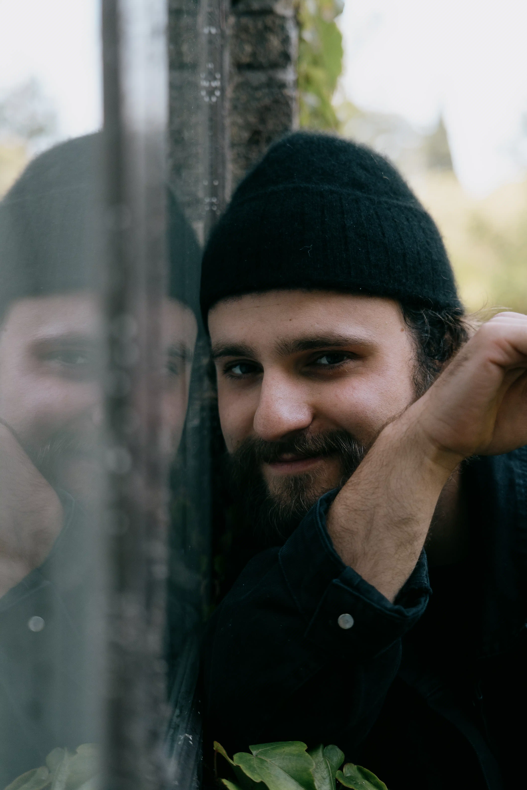
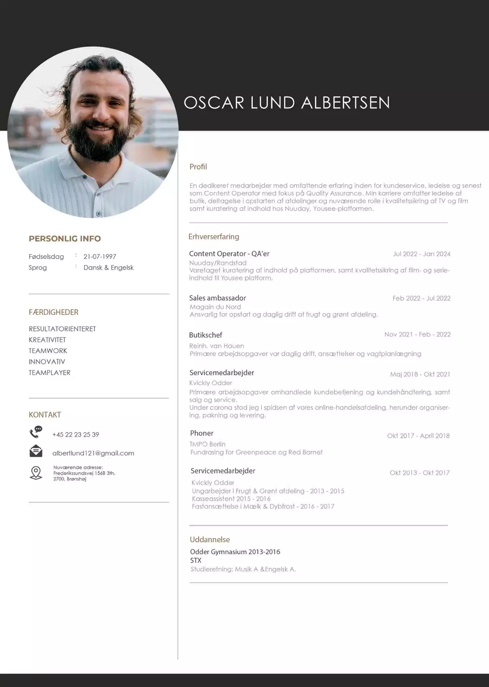

O L.
OSCAR LUND.

Jeg hedder Oscar og er 27 år gammel. Jeg er født og opvokset i
Odder, Jylland. For øjeblikket er jeg studerende på
Multimediedesigneruddannelsen på Københavns Erhvervsakademi. Ved
siden af studiet arbejder jeg som content operator hos Nuuday. Når
jeg ikke er på arbejde eller i skole, nyder jeg at spille guitar og
tilbringe tid med mine venner.
Jeg valgte at starte på Multimediedesigneruddannelsen, fordi den
giver mig en solid baggrund inden for design og kodning. Jeg tror
på, at disse færdigheder vil være værdifulde for mig i mit
fremtidige arbejdsliv.
